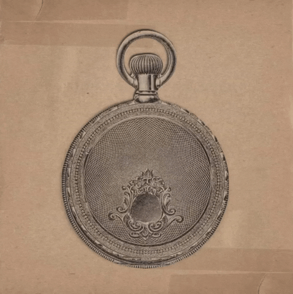

A Vida em um Dia
Em 25 de julho de 2020, pessoas no mundo inteiro filmaram a própria vida e compartilharam histórias para
fazer
parte de um documentário.
Quando todos os envios foram registrados, os cineastas haviam recebido
mais de
300
mil
vídeos de 192 países.
O resultado foi um filme incrível sobre amor, morte, tristeza e esperança que vai além da geografia e das circunstâncias para descobrir o que nos conecta como humanos.
Dirigido pelo vencedor do Oscar® Kevin Macdonald. Produzido pelo lendário cineasta Ridley Scott. E filmado por VOCÊ.
| 324.705 | 192 | 65 |
| Envios | PAÍSES | IDIOMAS |
-
Introdução
- Definição do documentário "Life in a Day"
- Objetivos da produção
-
Participantes
- Quantidade de participantes
- Nacionalidades representadas
- Diversidade de idades e culturas
-
Conclusão
- Importância do projeto "Life in a Day"
- Legado do documentário
Algumas características do documentário "Life in a Day 2020":
- Colaborativo: O documentário foi produzido a partir de imagens enviadas por pessoas comuns de todo o mundo, que capturaram suas experiências em um único dia.
- Inclusivo: Qualquer pessoa com uma câmera ou um smartphone poderia participar do projeto, independentemente de sua localização, cultura ou língua.
- Diverso: As imagens capturadas abrangem uma ampla gama de temas e experiências, incluindo amor, esperança, luto, medo e alegria. O documentário apresenta uma visão rica e multifacetada da vida em diferentes culturas e contextos.
- Pessoal: Embora o documentário apresente uma visão ampla e global, as histórias contadas são pessoais e emocionais, oferecendo uma janela para as vidas e experiências de pessoas comuns ao redor do mundo.
Clique na imagem abaixo para conhecer a página do projeto:
Você gostaria de participar de um projeto colaborativo como este?
Preencha o formulário abaixo para demostrar interesse: